2D-Wasserfall
2D-Waterfall
Zusammenfassung
Origins Wasserfalldiagramm verwendet einen in einer Parameterzeile gespeicherten Datensatz, um den Z-Versatz festzulegen und eine Farbabbildung mit Y- oder Z-Werten zu erstellen.
Was Sie lernen werden
Dieses Tutorial zeigt Ihnen, wie Sie:
- Ein 2D-Wasserfalldiagramm mit Farbabbildung der Y- oder Z-Werte erstellen
- Ebenen und Paletten der Farbabbildung benutzerdefiniert anpassen
Schritte
Wasserfalldiagramm mit Y-Farbabbildung erstellen
- Öffnen Sie das Sample-Projekt "Waterfall Plots - Waterfall with Y Colormap" in der Kategorie "Wasserfalldiagramme" im Lernzentrum (F11 drücken, um es zu öffnen).
- 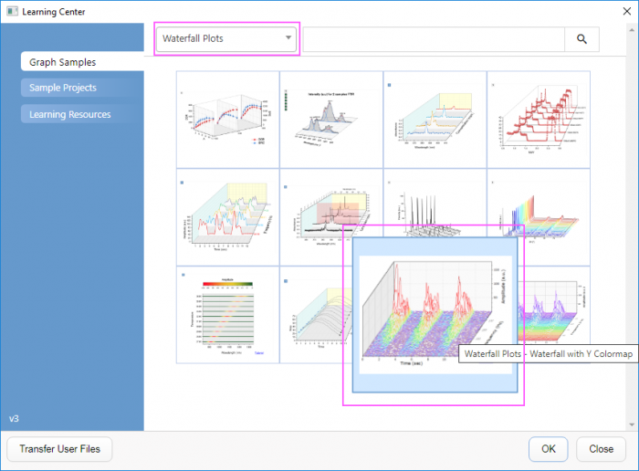
- Wählen Sie das Fenster Waterfall with Y Colormap, um es zu aktivieren. Klicken Sie in die obere, linke Ecke des Arbeitsblatts, um alle Daten zu markieren.
- Klicken Sie mit der rechten Maustaste und wählen Sie Zeichnen > 3D: Wasserfall Y: Farbabbildung, um ein Wasserfalldiagramm mit Farbabbildung der Y-Werte zu erstellen. (Alternativ wählen Sie die Schaltfläche Wasserfall Y: Farbabbildung auf der Symbolleiste 2D-Grafiken.) Ein Diagramm wie das folgende wird angezeigt:

- Beachten Sie, dass die in der benutzerdefinierten Parameterzeile Frequency (Hz) gespeicherten Werte automatisch als Quelle der Z-Werte ausgewählt wurde. Bestätigen Sie dies durch Doppelklick auf das Diagramm, um den Dialog Details Zeichnung aufzurufen, und wählen Sie Layer1 im linken Bedienfeld aus. Wechseln Sie zur Registerkarte Wasserfall und sehen Sie, dass die Quelle des Z-Werts auf Frequency (Hz) gesetzt wurde.
- 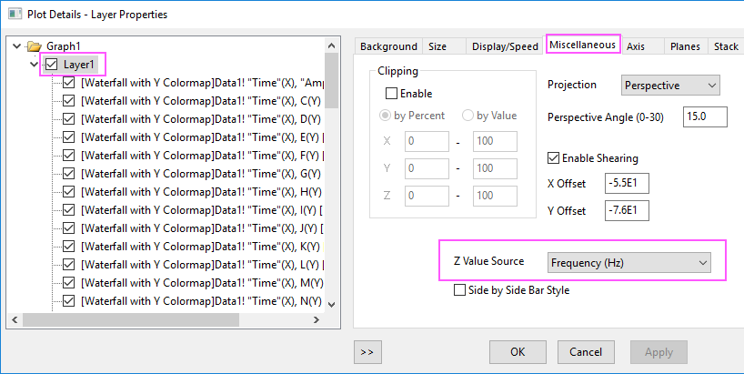
- Wählen Sie bei geöffnetem Dialog Details Zeichnung im linken Bedienfeld das erste Liniendiagramm unter Layer1 aus. Aktivieren Sie die Registerkarte Farbpalette im rechten Bedienfeld. Klicken Sie auf den Spaltenkopf Ebenen, um den Dialog Ebenen festlegen aufzurufen. Legen Sie die Ebenen, wie unten gezeigt, fest:
- 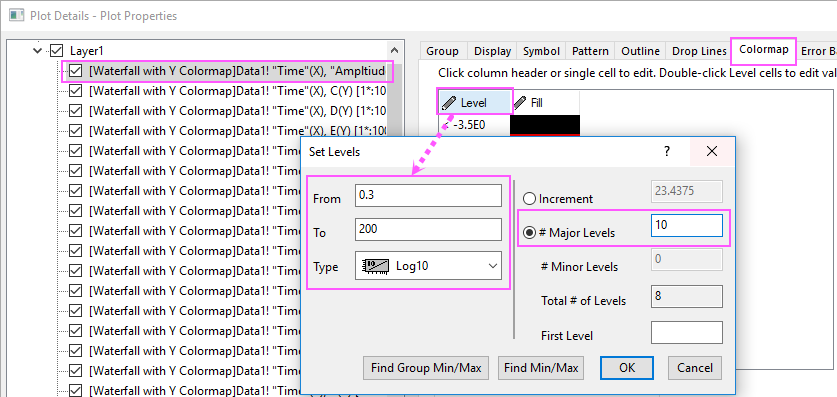
- Klicken Sie auf OK, um den Dialog Ebenen festlegen zu schließen.
- Klicken Sie auf den Spaltenkopf Füllung..., um den Dialog Füllung zu öffnen. Wählen Sie Palette laden und dann die Palette Rainbow aus der Liste. Klicken Sie auf OK, um den Dialog Füllung zu schließen.
- 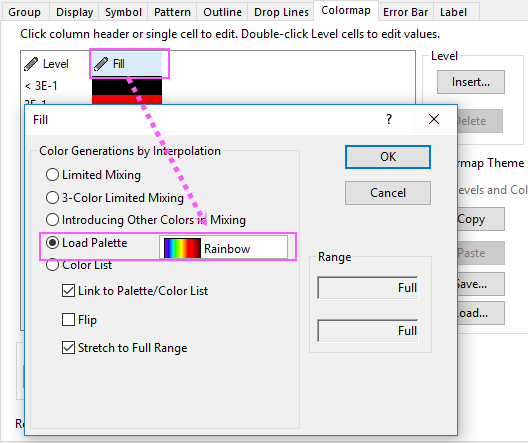
- Klicken Sie auf OK, um diese Einstellungen anzuwenden und den Dialog Details Zeichnung zu schließen.
- Klicken Sie auf die Z-Achse. Klicken Sie dann auf der Minisymbolleiste auf die Schaltfläche Achsenskalierung, um den Dialog Achsenskalierung zu öffnen. Setzen Sie die Werte für Von, Bis und Inkrement, wie unten zu sehen.
- 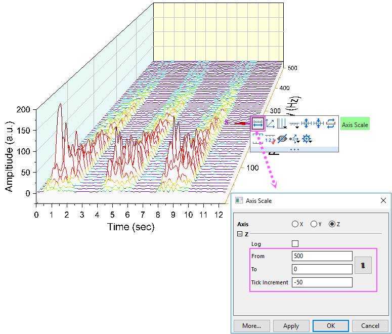
- Klicken Sie auf die Y-Achsen und dann auf der Minisymbolleiste auf die Schaltfläche Gegenüberliegende Achse zeigen, um die Y-Achse auf der anderen Seite zu zeigen.
- 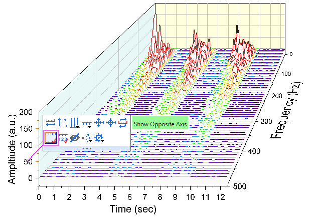
- Klicken Sie auf OK, um diese Änderungen anzuwenden und den Dialog zu schließen. Das Diagramm sollte am Ende folgendermaßen aussehen:
- 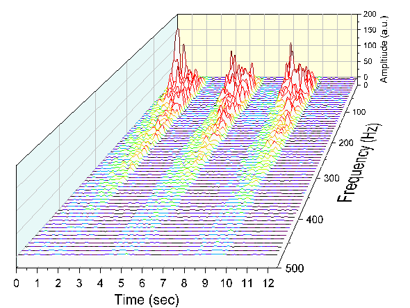
Wasserfalldiagramm mit Z-Farbabbildung erstellen
- Öffnen Sie das Sample-Projekt "Waterfall Plots - Waterfall with Z Colormap" in der Kategorie "Wasserfalldiagramme" im Lernzentrum (F11 drücken, um es zu öffnen).
- 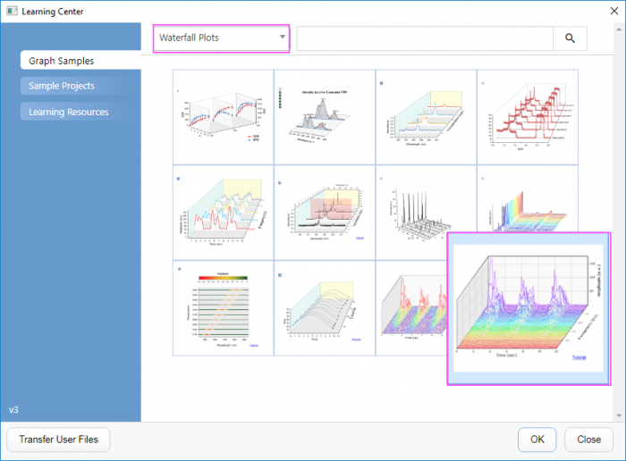
- Wählen Sie das Fenster Waterfall with Z Colormap, um es zu aktivieren. Klicken Sie in die obere, linke Ecke des Arbeitsblatts, um alle Daten zu markieren.
- Klicken Sie im Hauptmenü auf Zeichnen, gehen Sie dann zu 3D und wählen Sie Wasserfall Z: Farbabbildung, um ein Wasserfalldiagramm mit Farbabbildung der Z-Werte zu erstellen. (Wählen Sie alternativ die Option Wasserfall Z: Farbabbildung auf der Symbolleiste 2D Grafiken.)
- 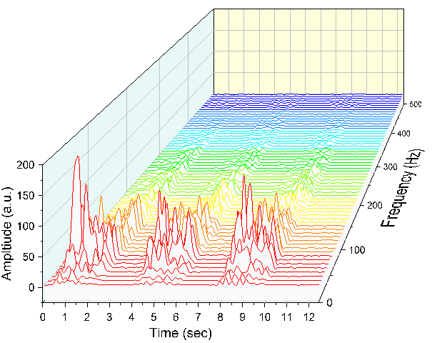
- Klicken Sie zum Öffnen des Dialogs Details Zeichnung doppelt auf die Zeichnung. Wählen Sie im linken Bedienfeld das erste Liniendiagramm in Layer1 aus. Aktivieren Sie die Registerkarte Farbpalette im rechten Bedienfeld. Klicken Sie auf den Spaltenkopf Ebenen, um den Dialog Ebenen festlegen aufzurufen. Setzen Sie die Hauptebenen auf 10.
- 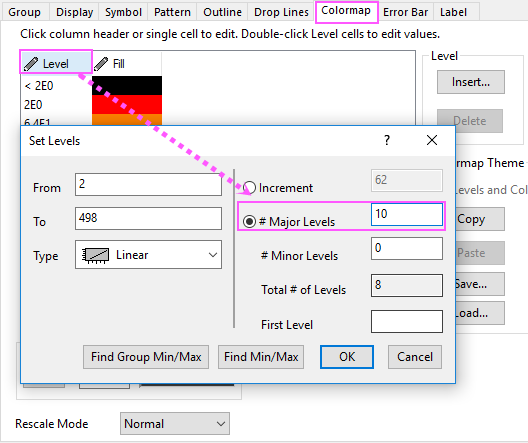
- Klicken Sie auf OK, um den Dialog Ebenen festlegen zu schließen.
- Klicken Sie auf den Spaltenkopf Füllung, um den Dialog Füllung aufzurufen. Wählen Sie Beschränkte Mischung und setzen Sie die Farbe Von auf Rot und die Farbe Bis auf Blau. Klicken Sie auf OK, um diese Einstellungen anzuwenden und den Dialog zu schließen. Bestätigen Sie mit OK, um den Dialog Details Zeichnung zu schließen.
- 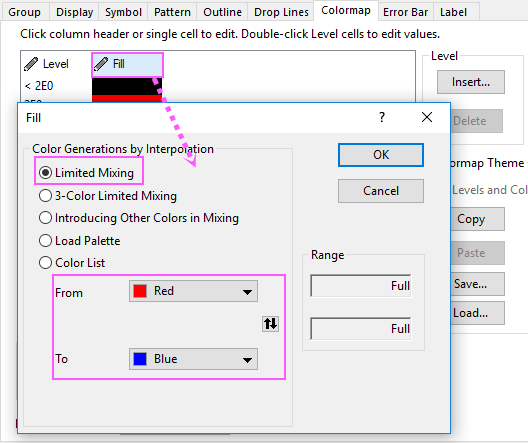
- Klicken Sie auf die Z-Achse. Klicken Sie dann auf der Minisymbolleiste auf die Schaltfläche Achsenskalierung, um den Dialog Achsenskalierung zu öffnen. Setzen Sie die Werte für Von, Bis und Inkrement, wie unten zu sehen.
- 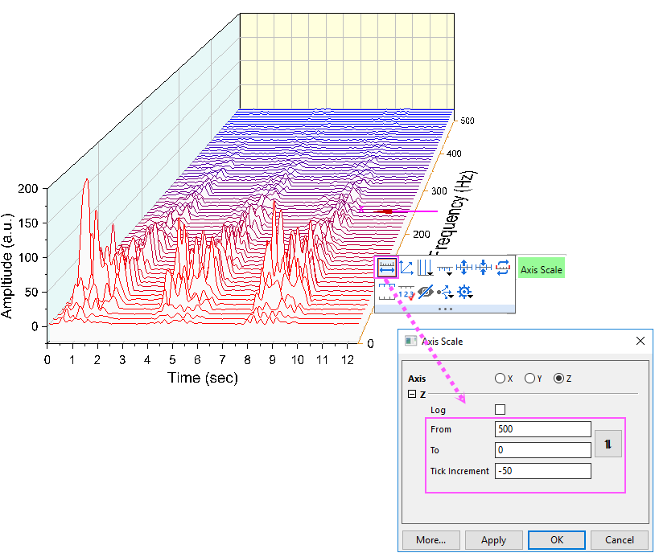
- Klicken Sie auf die Y-Achsen und dann auf der Minisymbolleiste auf die Schaltfläche Gegenüberliegende Achse zeigen, um die Y-Achse auf der anderen Seite zu zeigen.
- 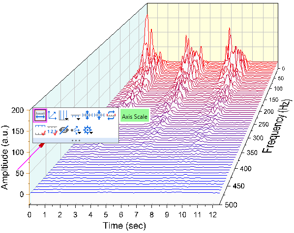
- Das Diagramm sollte am Ende folgendermaßen aussehen: